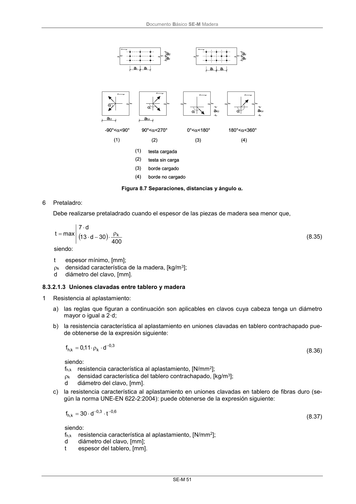

DB-SE-M Madera · edición 2019-12-20 · capa oficial
Documento DB-SE-M-oficial · SHA-256 del PDF 26b5819839ebfda78b0b119c5e76a0a37773b0d763c05688541870075df93718
Página física 57 de 132.
Copia fiel del PDF fuente · Fuente oficial
Ficha de la disposición en la fuente oficial
Formato: Texto de la página (Markdown)
Documento Básico SE-M Madera SE-M 51 Figura 8.7 Separaciones, distancias y ángulo . 6 Pretaladro: Debe realizarse pretaladrado cuando el espesor de las piezas de madera sea menor que, 400 30 d 13 d 7 max t k (8.35) siendo: t espesor mínimo, [mm]; k densidad característica de la madera, [kg/m3]; d diámetro del clavo, [mm]. 8.3.2.1.3 Uniones clavadas entre tablero y madera 1 Resistencia al aplastamiento: a) las reglas que figuran a continuación son aplicables en clavos cuya cabeza tenga un diámetro mayor o igual a 2·d; b) la resistencia característica al aplastamiento en uniones clavadas en tablero contrachapado pue- de obtenerse de la expresión siguiente: 3 , 0 k k,h d 11 ,0 f (8.36) siendo: fh,k resistencia característica al aplastamiento, [N/mm2]; k densidad característica del tablero contrachapado, [kg/m3]; d diámetro del clavo, [mm]. c) la resistencia característica al aplastamiento en uniones clavadas en tablero de fibras duro (se- gún la norma UNE-EN 622-2:2004): puede obtenerse de la expresión siguiente: 6 , 0 3 , 0 k,h t d 30 f (8.37) siendo: fh,k resistencia característica al aplastamiento, [N/mm2]; d diámetro del clavo, [mm]; t espesor del tablero, [mm].
